| ・ 日本光学会年次学術講演会 Optics & Photonics Japan 2019 Osaka＠大阪大学吹田キャンパス(R01.12.02-05) | |||
昨年は東京でしたが、日本光学会年次学術講演会 Optics & Photonics Japan 2019は大阪開催です。助教の人が実行委委員で受付です。 発表はM2N谷さんが光計測の研究で「接近する2つの微小液滴間のホログラムパターンの空間周波数解析」、M1M4さんが「位相回復法を用いた球面波インラインホログラフィ」を発表しました。 |
|||
|
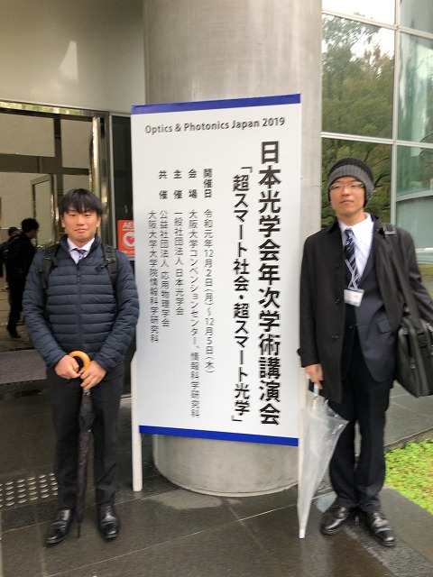
定番の看板写真 |
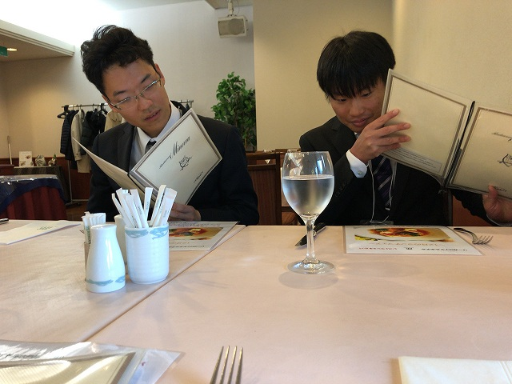
ちょっといい食堂でお昼 | ||
|
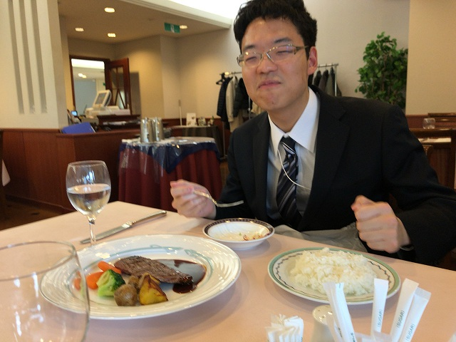
肉、 |
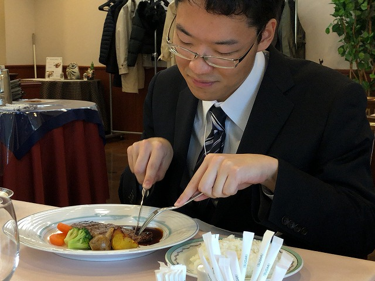
肉食べないと | ||
|
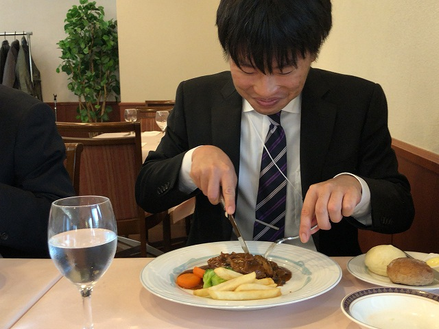
ハンバーグ |
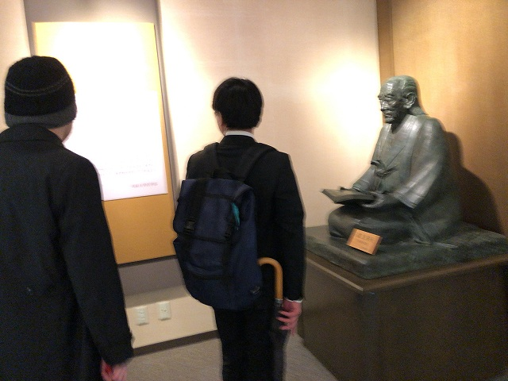
医学部の資料館 | ||
|
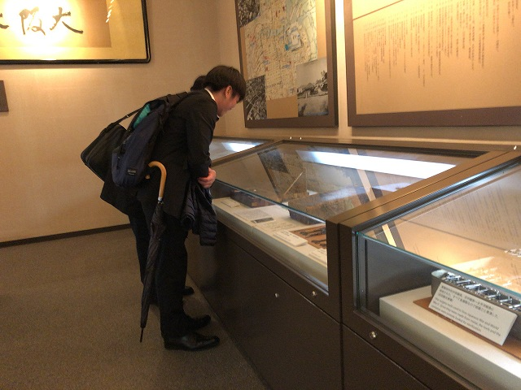
へ− |
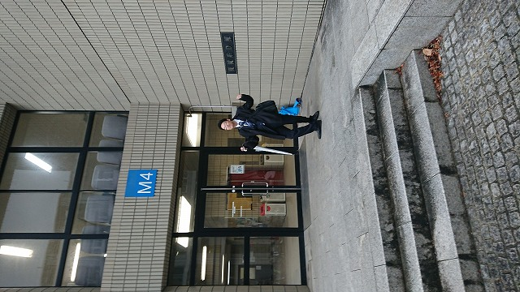
M4棟にM4 | ||
|
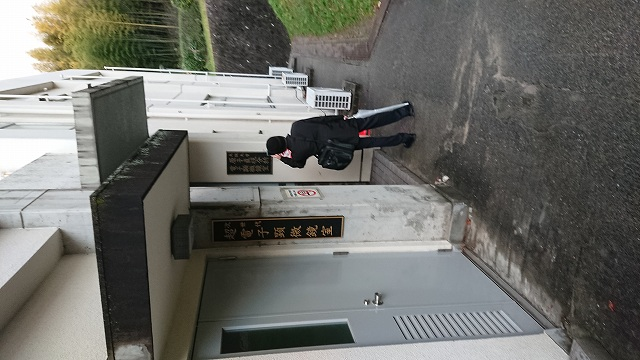
友達の研究室訪問 |
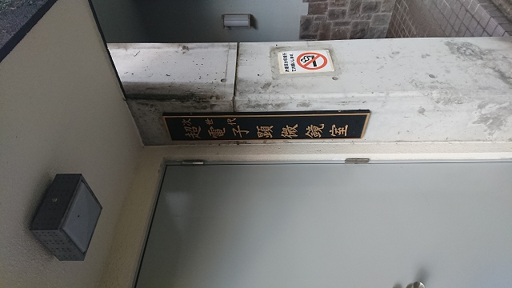
看板かっこいい | ||
|
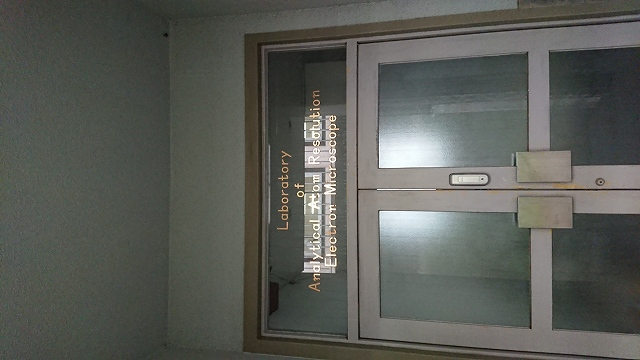
ウチもやる？ |
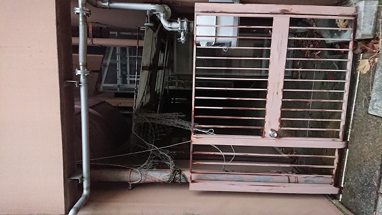
ごっちゃと感がM4のツボに | ||